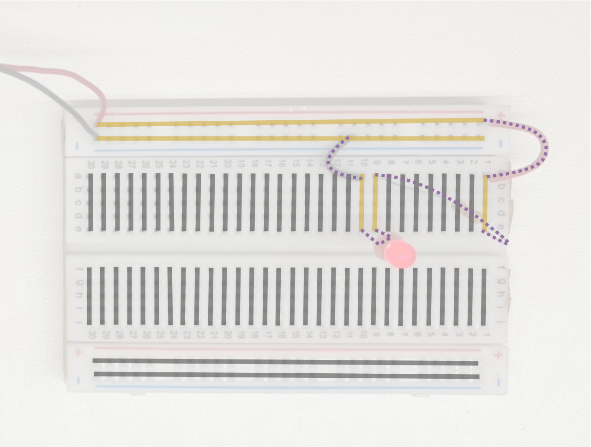
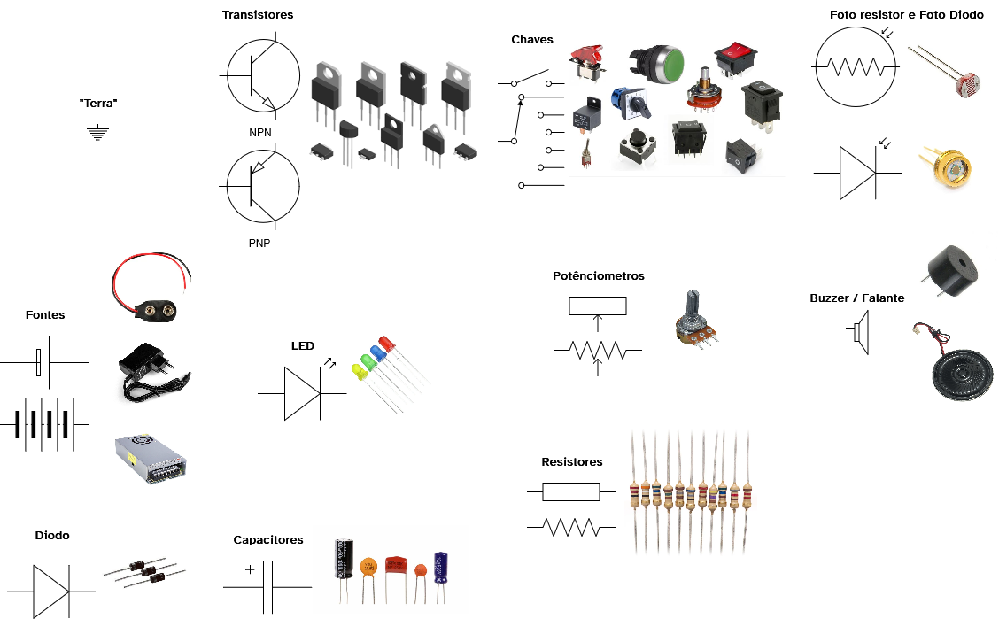

Circuitos Simples
Antes de que seja possível cair de cabeça em toda a magia do IoT, é bom que se tenha uma habilidade básica e entendimento de circuítos eletrônicos. Afinal, quando for necessário fazer um protótipo ou integração de um sensor XPTO qualquer em nosso sistema, ficará mais fácil dominando esses conceitos.
Quando os circuítos são desenhados, existem alguns padrões que torna fácil o entendimento e reprodução deles. Vamos começar com um dos mais simples deles.
Uma bateria e um led

Esse é um dos circuitos mais simples que podemos montar, ele é composto por uma bateria, que é o ícone no topo desse esquema, um led, mostrado na parte inferior, e um resistor de 330 ohms – essa é a unidade de medida de resistência, e por fim o que liga todos esses componentes é algum tipo de “fio”, que pode ser de fato fios de cobre, ou jumpers, pode ser um sistema de protoboard, ou ainda uma placa de circuíto impresso (ou feita em casa).
Assim podemos criar o circuíto da seguinte forma:

É uma possibilidade, mas para facilitar o processo de prototipagem é comum utilizarmos as protoboards (ou breadboard em inglês).

A Protoboard
Esse equipamentos facilita a parte de prototipagem, pois ele conta com a estrutura mostrada na imagem abaixo. Cada trilha (linha) pode ser conectada por diversos pinos, e todos que estiverem na mesma trilha compartilham do mesmo sinal e/ou alimentação elétrica

No exemplo desse circuito, veja como as trilhas ficam energizadas:

Na figura acima, as trilhas energizadas estão destacadas em amarelo, enquanto os componentes e jumpers aparecem em roxo. É possível observar que o circuito se fecha com a bateria, permitindo seu funcionamento.
Note também que há diversos outros pinos já energizados disponíveis para a montagem de novos circuitos. É importante sempre lembrar do ‘caminho’ da eletricidade: ela parte do polo positivo (geralmente representado pela cor vermelha) em direção ao polo negativo ou terra (representado pela cor preta).
Com tudo isso em mente já conseguimos olhar para outros componentes eletrônicos comuns. Na figura abaixo é possível ver alguns desses componentes, e seus equivalentes simbólicos para que consigamos ler e interpretar um diagrama eletrônico.

Componentes Eletrônicos
Os básicos
Chaves e Botões
São dispositivos mecânicos ou eletrônicos que permitem abrir ou fechar um circuito, interrompendo ou permitindo a passagem de corrente elétrica. São usados para controlar o funcionamento de circuitos.
Exemplos de uso:
- Interruptores para ligar e desligar luzes ou motores.
- Botões de pressão em controles remotos, campainhas, ou painéis de controle.
Tipos comuns:
- Chave liga/desliga (interruptor basculante).
- Botão de pressão (momentâneo).
- Chave seletora (permite selecionar entre várias posições).
- Chave DIP (usada para configurações em placas eletrônicas).
Resistor
Limita a corrente elétrica que passa em um circuito, protegendo componentes sensíveis e ajustando níveis de tensão e corrente.
Exemplos de uso:
- Proteger LEDs para que não queimem.
- Definir divisores de tensão para sensores.
- Controlar corrente em circuitos de áudio.
Tipos comuns:
- Resistor fixo (valores padrão como 220Ω, 1kΩ).
- Resistor variável (trimpot ou potenciômetro).
- Resistor de fio (para altas potências).
- Resistor SMD (montagem em superfície para placas de circuito impresso).
Diodos
Permitem que a corrente passe somente em uma direção. Usados para proteção ou controle da direção da corrente.
Exemplos de uso:
- Retificação em fontes de alimentação (converter corrente alternada em contínua).
- Proteção contra polaridade invertida em circuitos.
- Controle de sinais em circuitos digitais.
Tipos comuns:
- Diodo retificador (1N4001).
- Diodo zener (usado para regulação de tensão).
- Diodo de alta velocidade.
LED: Um diodo especial
É um diodo que emite luz visível ou infravermelha quando a corrente elétrica passa por ele.
Exemplos de uso:
- Indicadores de estado em painéis eletrônicos.
- Luzes de notificação em dispositivos.
- Comunicação via infravermelho (controle remoto).
Tipos comuns:
- LED padrão (vermelho, verde, azul, amarelo).
- LED RGB (contém LEDs vermelho, verde e azul para gerar várias cores).
- LED infravermelho (usado para comunicação remota).
- LED de alta potência para iluminação.
Potenciômetros
Resistores ajustáveis que permitem alterar a resistência manualmente, controlando a quantidade de corrente que passa.
Exemplos de uso:
- Ajustar o volume em rádios e amplificadores.
- Controlar a intensidade luminosa de LEDs.
- Ajustar a sensibilidade de sensores em projetos de IoT.
Tipos comuns:
- Potenciômetro rotativo (padrão, ajustado girando um eixo).
- Potenciômetro deslizante.
- Trimpot (ajuste fino, geralmente usado em circuitos para calibração).
Capacitores
Armazenam energia elétrica temporariamente e liberam de forma controlada. Ajuda na filtragem de ruídos, estabilização de sinais e temporização.
Exemplos de uso:
- Filtrar ruídos em fontes de alimentação.
- Criar temporizadores em circuitos eletrônicos.
- Acoplar sinais em amplificadores para bloquear DC.
Tipos comuns:
- Capacitor cerâmico (ideais para filtrar sinais em alta frequência).
- Capacitor eletrolítico (maiores capacidades, usados em fontes).
- Capacitor de tantálio.
- Capacitor de filme plástico.
Motores DC Simples
Convertem energia elétrica em movimento rotacional, essenciais para projetos que envolvem movimento.
Exemplos de uso:
- Robôs que se movimentam.
- Ventiladores e bombas pequenas.
- Modelismo e automação simples.
Tipos comuns:
- Motor DC com escovas.
- Motor brushless (sem escovas, mais eficiente).
- Motor com engrenagem (para aumento de torque).
Buzzers
Geram sons para alertas sonoros em dispositivos eletrônicos.
Exemplos de uso:
- Alarmes e sinalizações em dispositivos.
- Acerte/notifique erros ou eventos.
- Partes de sistemas de feedback tátil/sonoro.
Tipos comuns:
- Buzzer passivo (precisa de sinal oscilante para emitir som).
- Buzzer ativo (gera som com apenas a aplicação da tensão).
Transistores
Atuam como amplificadores de sinal ou interruptores eletrônicos, usados para controlar correntes maiores com sinais menores.
Exemplos de uso:
- Amplificação de sinais de áudio.
- Controle de motores e LEDs com microcontroladores.
- Circuitos de chaveamento e reguladores de tensão.
Tipos comuns:
- Transistor Bipolar de Junção (NPN e PNP).
- Transistor de Efeito de Campo (MOSFET).
- Transistor Darlington (alto ganho de corrente).
Algumas relações importantes!
Para finalizar nossa discussão de eletrônica básica, vamos ver algumas relações que ajudam a montar circuítos que funcionem:
Lei de Ohm.
\[V = { {R}\over{I} }\]Onde:
- V = Tensão (medida em volts, V)
- R = Resistência (medida em ohms, Ω)
- I = Corrente elétrica (medida em ampères, A)
Ou seja, a tensão aplicada em um componente é igual à resistência dele multiplicada pela corrente que passa por ele.
A partir dessa relação, podemos isolar as variáveis conforme a necessidade:
\[R = \frac{V}{I} \quad \quad I = \frac{V}{R}\]Essas fórmulas permitem, por exemplo, calcular qual resistor usar para limitar a corrente de um LED.
Potência Elétrica
\[P = V \times I\]- P = Potência (medida em watts, W)
- V = Tensão (medida em volts, V)
- I = Corrente elétrica (medida em ampères, A)
Ela indica quanta energia elétrica está sendo consumida ou dissipada em um componente. Isso é útil, por exemplo, para garantir que um resistor não aqueça além do limite ou para dimensionar a fonte de alimentação de um circuito.
Em resumo:
- Use a Lei de Ohm para relacionar tensão, corrente e resistência.
- Use a fórmula da potência para saber o quanto de energia está sendo consumido.
Com essas duas relações básicas, já é possível interpretar e projetar circuitos simples com mais segurança e eficiência.